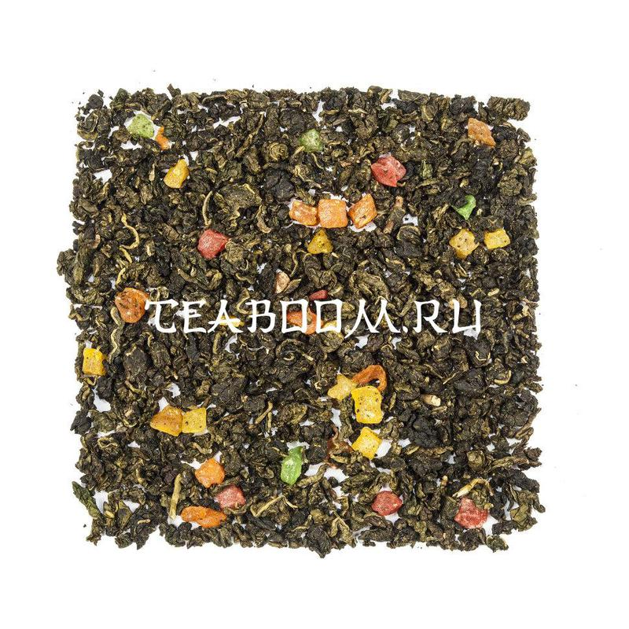

Ананасовый улун
Артикул: 01306

Описание
Состав:китайский бирюзовый чай, цукаты, натуральные ароматические масла. Светлый Фуцзяньский улун с ароматом ананаса. В сухом виде — красивый крупный лист изумрудного цвета, скруткой листа напоминающий Те Гуань Инь.
Вкус: настой прозрачный, светло-янтарного цвета. Классическая нота светлого фуцзяньского улуна переплетается c яркой ананасовой нотой.В прогретой посуде аромат свежей, весенней зелени и спелого ананаса. Скрученный лист медленно раскрывается, отдавая весь свой аромат. Тем, кому пришёлся по вкусу этот чай, может также понравиться связанный чай «Ананасовый рай».
Полезные свойства: отличный антиоксидант, снижает уровень холестерина, снижает лишний вес